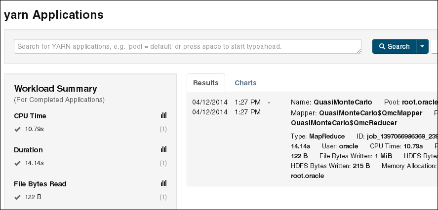
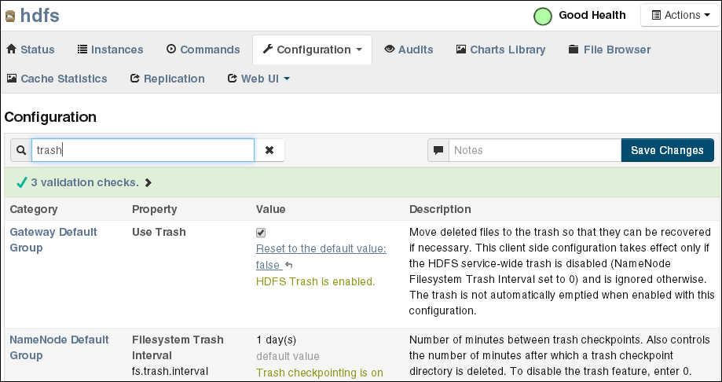

3 Supporting User Access to Oracle Big Data Appliance
This chapter describes how you can support users who run MapReduce jobs on Oracle Big Data Appliance or use Oracle Big Data Connectors. It contains these sections:
- About Accessing a Kerberos-Secured Cluster
- Providing Remote Client Access to CDH
- Providing Remote Client Access to Hive
- Managing User Accounts
- Recovering Deleted Files
Parent topic: Administration
3.1 About Accessing a Kerberos-Secured Cluster
Apache Hadoop is not an inherently secure system. It is protected only by network security. After a connection is established, a client has full access to the system.
To counterbalance this open environment, Oracle Big Data Appliance supports Kerberos security as a software installation option. Kerberos is a network authentication protocol that helps prevent malicious impersonation. Oracle Big Data Appliance support two forms of Kerberos Hadoop security: MIT Kerberos and Microsoft Active Directory Kerberos.
CDH provides these securities when configured to use Kerberos:
-
The CDH master nodes, NameNodes, and JournalNodes resolve the group name so that users cannot manipulate their group memberships.
-
Map tasks run under the identity of the user who submitted the job.
-
Authorization mechanisms in HDFS and MapReduce help control user access to data.
Oracle Big Data Appliance provides the ability to configure Kerberos security directly using a Microsoft Active Directory (AD) server for Kerberos support (as supported by Cloudera Manager).
You have the option of enabling either form of Kerberos as part of the Mammoth configuration. You can also enable or disable Kerberos later through the bdacli utility.
If the Oracle Big Data Appliance cluster is secured with Kerberos, then you must take additional steps to authenticate a CDH client and individual users, as described in this chapter. Users must know their Kerberos user name, password, and realm.
The following table describes some frequently used Kerberos commands. For more information, see the MIT Kerberos documentation.
Table 3-1 Kerberos User Commands
| Command | Description |
|---|---|
|
|
Obtains a Kerberos ticket. |
|
|
Lists a Kerberos ticket if you have one already. |
|
|
Invalidates a ticket before it expires. |
|
|
Changes your password. |
See Also:
-
MIT Kerberos Documentation at
http://web.mit.edu/kerberos/krb5-latest/doc/ -
CDH 5 Security Guide at https://www.cloudera.com/documentation/cdh/5-0-x/CDH5-Security-Guide/CDH5-Security-Guide.html.
-
If you choose to enable Active Directory Kerberos, either with Mammoth or with the bdacli utility, first read MOS (My Oracle Support) documents 2029378.1 and 2013585.1. These documents explain required preliminary steps and provide important information on known issues.
Parent topic: Supporting User Access to Oracle Big Data Appliance
3.2 Providing Remote Client Access to CDH
Oracle Big Data Appliance supports full local access to all commands and utilities in Cloudera's Distribution including Apache Hadoop (CDH).
You can use a browser on any computer that has access to the client network of Oracle Big Data Appliance to access Cloudera Manager, Hadoop Map/Reduce Administration, the Hadoop Task Tracker interface, and other browser-based Hadoop tools.
To issue Hadoop commands remotely, however, you must connect from a system configured as a CDH client with access to the Oracle Big Data Appliance client network. This section explains how to set up a computer so that you can access HDFS and submit MapReduce jobs on Oracle Big Data Appliance.
- Prerequisites
- Installing a CDH Client on Any Supported Operating System
- Configuring a CDH Client for an Unsecured Cluster
- Configuring a CDH Client for a Kerberos-Secured Cluster
- Verifying Access to a Cluster from the CDH Client
See Also:
My Oracle Support ID 1506203.1
Parent topic: Supporting User Access to Oracle Big Data Appliance
3.2.1 Prerequisites
Ensure that you have met the following prerequisites:
-
You must have these access privileges:
-
Sudo access to the client system
-
Login access to Cloudera Manager
If you do not have these privileges, then contact your system administrator for help.
-
-
The client system must run an operating system that Cloudera supports for CDH5. See the Cloudera CDH5 Installation Guide at
-
The client system must run Oracle JDK 1.7.0_25 or later.
To verify the version, use this command:
$ java -version java version "1.7.0_65" Java(TM) SE Runtime Environment (build 1.7.0_65-b17) Java HotSpot(TM) 64-Bit Server VM (build 24.65-b04, mixed mode) -
In the client configuration, ensure that the HDFS property
dfs.client.use.datanode.hostnameis set to “true”.<property> <name>dfs.client.use.datanode.hostname</name> <value>true</value> <description>Whether clients should use datanode hostnames when connecting to datanodes. </description> </property>This is property is already set to “
true” if you download the configuration from Cloudera Manager on Oracle Big Data Appliance. It may not be set to “true” if you acquire the configuration from other sources, including Cloudera.
Parent topic: Providing Remote Client Access to CDH
3.2.2 Installing a CDH Client on Any Supported Operating System
To install a CDH client on any operating system identified as supported by Cloudera, follow these instructions.
To install the CDH client software:
-
Log in to the client system.
-
If an earlier version of Hadoop is already installed, then remove it.
See the Cloudera documentation for removing an earlier CDH version at
https://www.cloudera.com/documentation/enterprise/5-5-x/topics/cdh_ig_cdh_comp_uninstall.html
-
Copy the CDH software from any node in a CDH cluster on Oracle Big Data Appliance. For example, the following file contains the CDH 5.8.0 software:
/opt/oss/src/CDH/5.8.0-ol5/hadoop-2.6.0-cdh5.8.0.tar.gz
-
Decompress the file into a permanent location, which will be the Hadoop home directory. The following command unzips the files into
hadoop-2.6.0-cdh5.8.0in the current directory:tar -xvzf hadoop-2.6.0-cdh5.8.0.tar.gz
-
Configure the CDH client, as described in the next procedure.
Parent topic: Providing Remote Client Access to CDH
3.2.3 Configuring a CDH Client for an Unsecured Cluster
After installing CDH, you must configure it for use with Oracle Big Data Appliance.
The commands in this procedure that reference HADOOP_HOME are used to support older Hadoop clients that require this environment variable. The cluster uses YARN (MRv2) and does not use HADOOP_HOME. If no older clients access the cluster, then you can omit these commands.
To configure the Hadoop client:
-
Log in to the client system and download the MapReduce client configuration from Cloudera Manager. In this example, Cloudera Manager listens on port 7180 (the default) of
bda01node03.example.com, and the configuration is stored in a file namedyarn-conf.zip.$ wget -O yarn-conf.zip http://bda01node03.example.com:7180/cmf/services/3/client-config
-
Unzip
mapreduce-config.zipinto a permanent location on the client system.$ unzip yarn-config.zip Archive: yarn-config.zip inflating: yarn-conf/hadoop-env.sh inflating: yarn-conf/hdfs-site.xml inflating: yarn-conf/core-site.xml inflating: yarn-conf/mapred-site.xml inflating: yarn-conf/log4j.properties inflating: yarn-conf/yarn-site.xmlAll files are stored in a subdirectory named
yarn-config. -
Set the symbolic links:
ln -s $HADOOP_HOME/../../../bin-mapreduce1 $HADOOP_HOME/bin ln -s $HADOOP_HOME/../../../etc/hadoop-mapreduce1 $HADOOP_HOME/conf rm -f $HADOOP_HOME/lib/slf4j-log4j*jar
-
Open
hadoop-env.shin a text editor and set the environment variables to the actual paths on your system:export HADOOP_HOME=hadoop-home-dir/share/hadoop/mapreduce1 export HADOOP_MAPRED_HOME=$HADOOP_HOME export HADOOP_CONF_DIR=yarn-conf-dir export JAVA_HOME=/usr/java/version alias hadoop=$HADOOP_HOME/bin/hadoop alias hdfs=$HADOOP_HOME/../../../bin/hdfs
-
Make a backup copy of the Hadoop configuration files:
# cp /full_path/yarn-conf /full_path/yarn-conf-bak
-
Overwrite the existing configuration files with the downloaded configuration files in Step 2.
# cd /full_path/yarn-conf # cp * /usr/lib/hadoop/conf
Parent topic: Providing Remote Client Access to CDH
3.2.4 Configuring a CDH Client for a Kerberos-Secured Cluster
Follow these steps to enable the CDH client to work with a secure CDH cluster.
To configure a CDH client for Kerberos:
-
Log in to the system where you created the CDH client.
-
Install the Java Cryptography Extension Unlimited Strength Jurisdiction Policy Files:
-
Download the files for your Java version:
Java 6:
http://www.oracle.com/technetwork/java/javase/downloads/jce-6-download-429243.htmlJava 7:
http://www.oracle.com/technetwork/java/javase/downloads/jce-7-download-432124.htmlJava 8:
http://www.oracle.com/technetwork/java/javase/downloads/jce8-download-2133166.html -
Decompress the downloaded file. This example unzips JCE-8:
$ unzip UnlimitedJCEPolicyJDK8.zip Archive: UnlimitedJCEPolicyJDK8.zip creating: UnlimitedJCEPolicy/ inflating: UnlimitedJCEPolicy/US_export_policy.jar inflating: UnlimitedJCEPolicy/local_policy.jar inflating: UnlimitedJCEPolicy/README.txtNote:
The JCE-6 files unzip into a directory named jce instead of UnlimitedJCEPolicy.
-
Copy the unzipped files into the Java security directory. For example:
$ cp UnlimitedJCEPolicy/* /usr/java/latest/jre/lib/security/
-
-
Follow the steps for configuring an unsecured client.
-
Ensure that you have a user ID on the CDH cluster that had been added to the Kerberos realm.
-
On the CDH client system, create a file named
krb5.confin the$HADOOP_CONF_DIRdirectory. Enter configuration settings like the following, using values appropriate for your installation for the server names, domain, and realm:[libdefaults] default_realm = EXAMPLE.COM dns_lookup_realm = false dns_lookup_kdc = false clockskew = 3600 ticket_lifetime = 24h renew_lifetime = 7d forwardable = true [realms] EXAMPLE.COM = { kdc = bda01node01.example:88 admin_server = bda01node07:749 default_domain = example.com } [domain_realm] .com = EXAMPLE.COM -
Activate the new configuration file:
export KRB5_CONFIG=$HADOOP_CONF_DIR/krb5.conf export HADOOP_OPTS="-Djava.security.krb5.conf=$HADOOP_CONF_DIR/krb5.conf" export KRB5CCNAME=$HADOOP_CONF_DIR/krb5cc_$USER
-
Verify that you have access to the Oracle Big Data Appliance cluster.
Parent topic: Providing Remote Client Access to CDH
3.2.5 Verifying Access to a Cluster from the CDH Client
Follow this procedure to ensure that you have access to the Oracle Big Data Appliance cluster.
To verify cluster access:
-
To access a Kerberos-protected CDH cluster, first obtain a ticket granting ticket (TGT):
$ kinit userid@realm
-
Verify that you can access HDFS on Oracle Big Data Appliance from the client, by entering a simple Hadoop file system command like the following:
$ hadoop fs -ls /user Found 6 items drwxr-xr-x - jdoe hadoop 0 2014-04-03 00:08 /user/jdoe drwxrwxrwx - mapred hadoop 0 2014-04-02 23:25 /user/history drwxr-xr-x - hive supergroup 0 2014-04-02 23:27 /user/hive drwxrwxr-x - impala impala 0 2014-04-03 10:45 /user/impala drwxr-xr-x - oozie hadoop 0 2014-04-02 23:27 /user/oozie drwxr-xr-x - oracle hadoop 0 2014-04-03 11:49 /user/oracleCheck the output for HDFS users defined on Oracle Big Data Appliance, and not on the client system. You should see the same results as you would after entering the command directly on Oracle Big Data Appliance.
-
Submit a MapReduce job. You must be logged in to the client system under the same user name as your HDFS user name on Oracle Big Data Appliance.
The following example calculates the value of pi:
$ hadoop jar /opt/cloudera/parcels/CDH/lib/hadoop-mapreduce/hadoop-mapreduce-examples-*jar pi 10 1000000 Number of Maps = 10 Samples per Map = 1000000 Wrote input for Map #0 Wrote input for Map #1 . . . Job Finished in 12.403 seconds Estimated value of Pi is 3.14158440000000000000 -
Use Cloudera Manager to verify that the job ran on Oracle Big Data Appliance instead of the local system. Select mapreduce Jobs from the Activities menu for a list of jobs.
The following figure shows the job created by the previous example.
Figure 3-1 Monitoring a YARN Job in Cloudera Manager
Description of "Figure 3-1 Monitoring a YARN Job in Cloudera Manager"
Parent topic: Providing Remote Client Access to CDH
3.3 Providing Remote Client Access to Hive
To set up a Hive client:
-
Set up a CDH client. See "Providing Remote Client Access to CDH."
-
Log in to the client system and download the Hive client configuration from Cloudera Manager. In this example, Cloudera Manager listens on port 7180 (the default) of
bda01node03.example.com, and the configuration is stored in a file namedhive-conf.zip.$ wget -O hive-conf.zip http://bda01node03.example.com:7180/cmf/services/5/client-config Length: 1283 (1.3K) [application/zip] Saving to: 'hive-conf.zip' 100%[======================================>] 1,283 --.-K/s in 0.001s 2016-05-15 08:19:06 (2.17 MB/s) - `hive-conf.zip' saved [1283/1283] -
Unzip the file into a permanent installation directory, which will be the Hive configuration directory:
$ unzip hive-conf.zip Archive: hive-conf.zip inflating: hive-conf/hive-env.sh inflating: hive-conf/hive-site.xml -
Download the Hive software from the Cloudera website:
$ wget http://archive.cloudera.com/cdh5/cdh/5/hive-<version>-cdh5.<version>.tar.gz Length: 49637596 (47M) [application/x-gzip] Saving to: 'hive-<version>-cdh5.<version>.tar.gz' 100%[======================================>] 49,637,596 839K/s in 47s 2016-05-15 08:22:18 (1.02 MB/s) - `hive-<version>-cdh5.<version>.tar.gz' saved [49637596/49637596]
-
Decompress the file into a permanent installation directory, which will be the Hive home directory. The following command unzips the files into the current directory in a subdirectory named
hive-0.12.0-cdh5.0.0:$ tar -xvzf hive-<version>-cdh5.<version>.tar.gz hive-<version>-cdh5.<version>/ hive-<version>-cdh5.<version>/examples/ . . .
-
Set the following variables, replacing hive-home-dir and hive-conf-dir with the directories you created in steps 3 and 5.
export HIVE_HOME=hive-home-dir export HIVE_CONF_DIR=hive-conf-dir alias hive=$HIVE_HOME/bin/hive
The following steps test whether you successfully set up a Hive client.
To verify Hive access:
-
To access a Kerberos-protected CDH cluster, first obtain a ticket granting ticket (TGT):
$ kinit userid@realm
-
Open the Hive console:
$ hive Logging initialized using configuration in jar:file:/usr/lib/hive/lib/hive-common-<version>-cdh5.<version>.jar!/hive-log4j.properties Hive history file=/tmp/oracle/hive_job_log_e10527ee-9637-4c08-9559-a2e5cea6cef1_831268640.txt hive>
-
List all tables:
hive> show tables; OK src
Parent topic: Supporting User Access to Oracle Big Data Appliance
3.4 Managing User Accounts
This section describes how to create users who can access HDFS, MapReduce, and Hive. It contains the following topics:
Parent topic: Supporting User Access to Oracle Big Data Appliance
3.4.1 Creating Hadoop Cluster Users
-
To run MapReduce jobs, users must either be in the
hadoopgroup or be granted the equivalent permissions. -
To create and modify tables in Hive, users must either be in the
hivegroup or be granted the equivalent permissions. -
To create Hue users, open Hue in a browser and click the User Admin icon. See "Using Cloudera Hue to Interact With Hadoop."
Parent topic: Managing User Accounts
3.4.1.1 Creating Users on an Unsecured Cluster
To create a user on an unsecured Hadoop cluster:
Example 3-1 Creating a Hadoop User
# sudo -u hdfs hadoop fs -mkdir /user/jdoe # sudo -u hdfs hadoop fs -chown jdoe:hadoop /user/jdoe # hadoop fs -ls /user Found 5 items drwx------ - hdfs supergroup 0 2013-01-16 13:50 /user/hdfs drwxr-xr-x - hive supergroup 0 2013-01-16 12:58 /user/hive drwxr-xr-x - jdoe jdoe 0 2013-01-18 14:04 /user/jdoe drwxr-xr-x - oozie hadoop 0 2013-01-16 13:01 /user/oozie drwxr-xr-x - oracle hadoop 0 2013-01-16 13:01 /user/oracle # dcli useradd -G hadoop,hive -m jdoe # dcli id jdoe bda1node01: uid=1001(jdoe) gid=1003(jdoe) groups=1003(jdoe),127(hive),123(hadoop) bda1node02: uid=1001(jdoe) gid=1003(jdoe) groups=1003(jdoe),123(hadoop),127(hive) bda1node03: uid=1001(jdoe) gid=1003(jdoe) groups=1003(jdoe),123(hadoop),127(hive) . . . # dcli ls /home | grep jdoe bda1node01: jdoe bda1node02: jdoe bda1node03: jdoe
Example 3-1 creates a user named jdoe with a primary group of hadoop and an addition group of hive.
Parent topic: Creating Hadoop Cluster Users
3.4.1.2 Creating Users on a Secured Cluster
To create a user on a Kerberos-secured cluster:
Parent topic: Creating Hadoop Cluster Users
3.4.2 Providing User Login Privileges (Optional)
Users do not need login privileges on Oracle Big Data Appliance to run MapReduce jobs from a remote client. However, for those who want to log in to Oracle Big Data Appliance, you must set a password. You can set or reset a password the same way.
To set a user password across all Oracle Big Data Appliance servers:
-
Create a Hadoop cluster user as described in "Creating Hadoop Cluster Users.".
-
Confirm that the user does not have a password:
# dcli passwd -S user_name bda1node01.example.com: jdoe NP 2013-01-22 0 99999 7 -1 (Empty password.) bda1node02.example.com: jdoe NP 2013-01-22 0 99999 7 -1 (Empty password.) bda1node03.example.com: jdoe NP 2013-01-22 0 99999 7 -1 (Empty password.)
If the output shows either "Empty password" or "Password locked," then you must set a password.
-
Set the password:
hash=$(echo 'password' | openssl passwd -1 -stdin); dcli "usermod --pass='$hash' user_name"
-
Confirm that the password is set across all servers:
# dcli passwd -S user_name bda1node01.example.com: jdoe PS 2013-01-24 0 99999 7 -1 (Password set, MD5 crypt.) bda1node02.example.com: jdoe PS 2013-01-24 0 99999 7 -1 (Password set, MD5 crypt.) bda1node03.example.com: jdoe PS 2013-01-24 0 99999 7 -1 (Password set, MD5 crypt.)
See Also:
-
Oracle Big Data Appliance Owner's Guide for information about
dcli. -
The Linux
manpage for the full syntax of theuseraddcommand.
Parent topic: Managing User Accounts
3.5 Recovering Deleted Files
CDH provides an optional trash facility, so that a deleted file or directory is moved to a trash directory for a set period, instead of being deleted immediately from the system. By default, the trash facility is enabled for HDFS and all HDFS clients.
Parent topic: Supporting User Access to Oracle Big Data Appliance
3.5.1 Restoring Files from the Trash
When the trash facility is enabled, you can easily restore files that were previously deleted.
To restore a file from the trash directory:
-
Check that the deleted file is in the trash. The following example checks for files deleted by the
oracleuser:$ hadoop fs -ls .Trash/Current/user/oracle Found 1 items -rw-r--r-- 3 oracle hadoop 242510990 2012-08-31 11:20 /user/oracle/.Trash/Current/user/oracle/ontime_s.dat -
Move or copy the file to its previous location. The following example moves
ontime_s.datfrom the trash to the HDFS/user/oracledirectory.$ hadoop fs -mv .Trash/Current/user/oracle/ontime_s.dat /user/oracle/ontime_s.dat
Parent topic: Recovering Deleted Files
3.5.2 Changing the Trash Interval
The trash interval is the minimum number of minutes that a file remains in the trash directory before being deleted permanently from the system. The default value is 1 day (24 hours).
To change the trash interval:
-
Open Cloudera Manager. See "Managing Operations Using Cloudera Manager".
-
On the Home page under Status, click hdfs.
-
On the hdfs page, click the Configuration subtab, and then select View and Edit.
-
Search for or scroll down to the Filesystem Trash Interval property under NameNode Default Group. See Figure 3-2.
-
Click the current value, and enter a new value in the pop-up form.
-
Click Save Changes.
-
Expand the Actions menu at the top of the page and choose Restart.
-
Open a connection as
rootto a node in the cluster. -
Deploy the new configuration:
dcli -C bdagetclientconfig
The following figure shows the Filesystem Trash Interval property in Cloudera Manager.
Figure 3-2 HDFS Property Settings in Cloudera Manager
Description of "Figure 3-2 HDFS Property Settings in Cloudera Manager"
Parent topic: Recovering Deleted Files
3.5.3 Disabling the Trash Facility
The trash facility on Oracle Big Data Appliance is enabled by default. You can change this configuration for a cluster. When the trash facility is disabled, deleted files and directories are not moved to the trash. They are not recoverable.
- Completely Disabling the Trash Facility
- Disabling the Trash Facility for Local HDFS Clients
- Disabling the Trash Facility for a Remote HDFS Client
Parent topic: Recovering Deleted Files
3.5.3.1 Completely Disabling the Trash Facility
The following procedure disables the trash facility for HDFS. When the trash facility is completely disabled, the client configuration is irrelevant.
To completely disable the trash facility:
-
Open Cloudera Manager. See "Managing Operations Using Cloudera Manager".
-
On the Home page under Status, click hdfs.
-
On the hdfs page, click the Configuration subtab, and then select View and Edit.
-
Search for or scroll down to the Filesystem Trash Interval property under NameNode Default Group. See Figure 3-2.
-
Click the current value, and enter a value of 0 (zero) in the pop-up form.
-
Click Save Changes.
-
Expand the Actions menu at the top of the page and choose Restart.
Parent topic: Disabling the Trash Facility
3.5.3.2 Disabling the Trash Facility for Local HDFS Clients
All HDFS clients that are installed on Oracle Big Data Appliance are configured to use the trash facility. An HDFS client is any software that connects to HDFS to perform operations such as listing HDFS files, copying files to and from HDFS, and creating directories.
You can use Cloudera Manager to change the local client configuration setting, although the trash facility is still enabled.
Note:
If you do not want any clients to use the trash, then you can completely disable the trash facility. See "Completely Disabling the Trash Facility."
To disable the trash facility for local HDFS clients:
-
Open Cloudera Manager. See "Managing Operations Using Cloudera Manager".
-
On the Home page under Status, click hdfs.
-
On the hdfs page, click the Configuration subtab, and then select View and Edit.
-
Search for or scroll down to the Filesystem Trash Interval property under Gateway Default Group. See Figure 3-2.
-
Search for or scroll down to the Use Trash property under Client Settings. See Figure 3-2.
-
Deselect the Use Trash check box.
-
Click Save Changes. This setting is used to configure all new HDFS clients downloaded to Oracle Big Data Appliance.
-
Open a connection as
rootto a node in the cluster. -
Deploy the new configuration:
dcli -C bdagetclientconfig
Parent topic: Disabling the Trash Facility
3.5.3.3 Disabling the Trash Facility for a Remote HDFS Client
Remote HDFS clients are typically configured by downloading and installing a CDH client, as described in "Providing Remote Client Access to CDH." Oracle SQL Connector for HDFS and Oracle R Advanced Analytics for Hadoop are examples of remote clients.
To disable the trash facility for a remote HDFS client:
-
Open a connection to the system where the CDH client is installed.
-
Open
/etc/hadoop/conf/hdfs-site.xmlin a text editor. -
Set the trash interval to zero:
<property> <name>fs.trash.interval</name> <value>0</value> </property> -
Save the file.
Parent topic: Disabling the Trash Facility